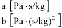

This model allows you to directly enter the coefficients, a and b, into the mass flow version of the quadratic flow model. Where DP is the pressure drop and F is the mass flow rate.
Name: Enter the name you want to use to identify the airflow element. The airflow element will be saved within the current project and can be associated with multiple airflow paths.
Coefficients: The coefficients must be expressed in SI units because of the way ContamW handles unit conversions. The units of the coefficients are as follows:

Description: Field for entering a more detailed description of the specific airflow element.
Icon: Choose either the small or large opening icon as appropriate for the specific airflow element. The icon has no effect on the simulations.